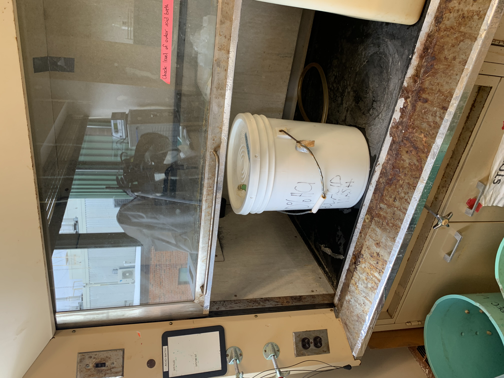
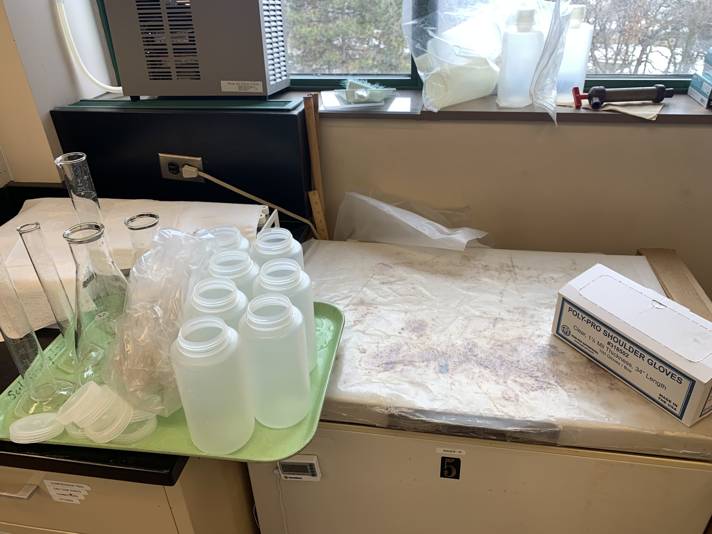
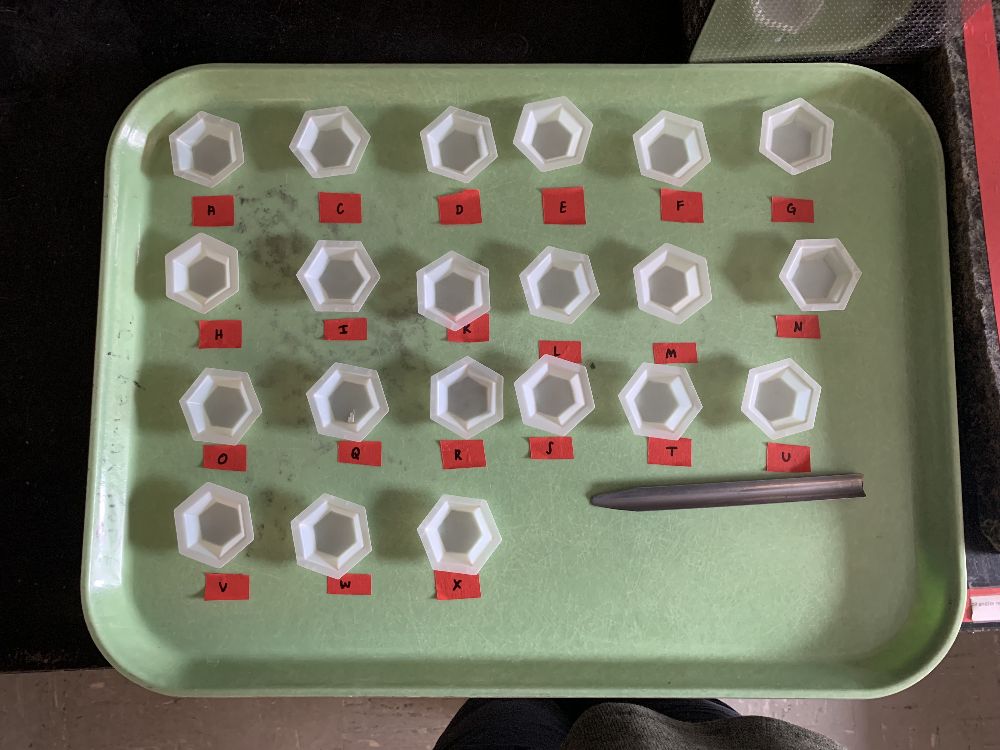
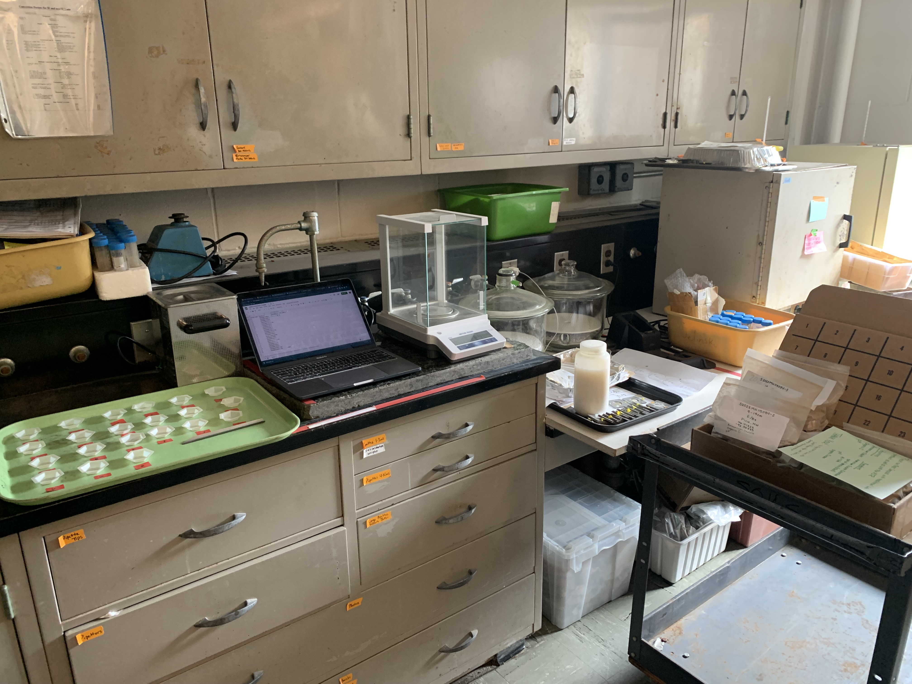
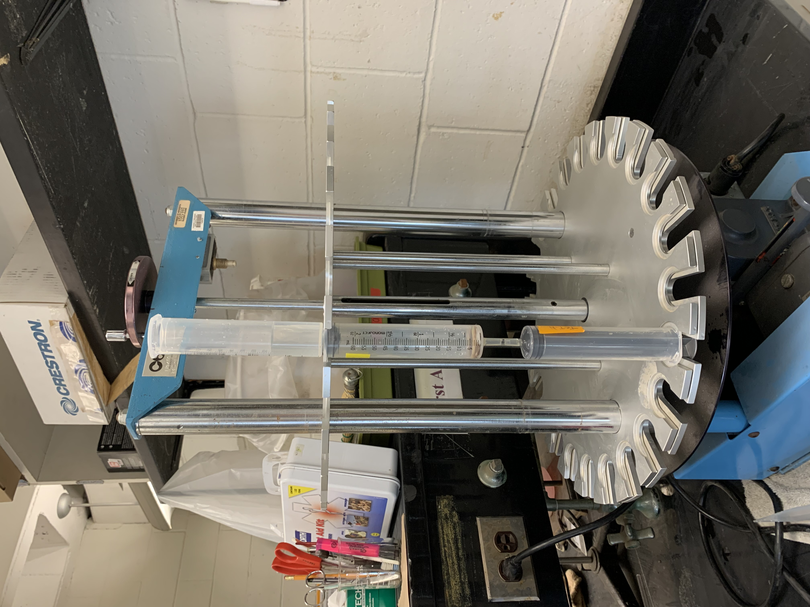
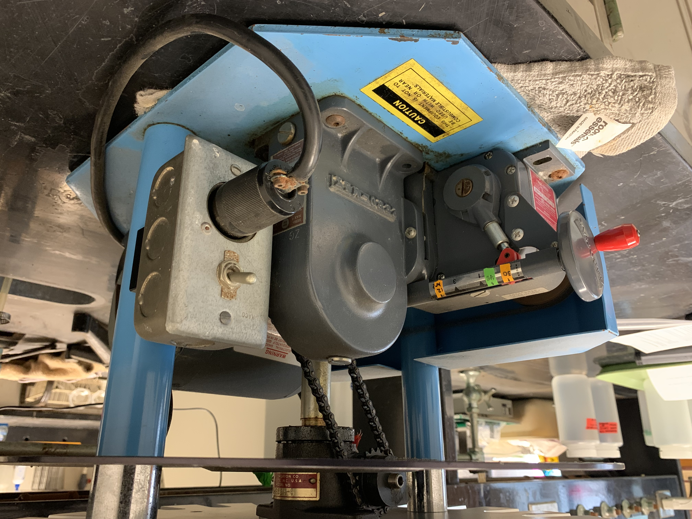

2 Ammonium Oxalate Extraction for Amorphous Iron
Last edited: 03NOV2023 NP
Modified from Kellogg Soil Survey Laboratory Methods Manual; Soil Survey Investigations Report No. 42. Version 5.0 (2014) and Version 6.1
Selective dissolutions start on page 596 of the PDF. The ammonium oxalate extraction starts on page 608.
The NRCS no longer does a 12 hr extraction. See their manual. Also, the 12 hour extraction on our machine did not take 2 hours; it took closer to 9. It’s a 12 hour RATE.
2.1 Materials
- Hot plate/stirrer and stir bar (will only use stirrer function)
- Analytical balance, ± 1.0 mg sensitivity
- Weigh boats, small
- Scoopula
- Alcohol and Kimwipes
- Pipette/dispenser, electronic digital, 50 mL
- Containers, polyethylene (1 L Nalgene)
- Test tubes, 15 mL, 16 mm x 100 mm
- Cuvettes, plastic, 4.5 mL, 1 cm light path (for optical density)
- Extractor stand
2.2 Equipment Preparation
All glassware/plastics must be acid washed. This includes the flasks, graduated cylinders, and new Nalgenes. Use acid wash in Toner lab; email Brandy Toner or Cole Stenberg to coordinate. If you have never used the acid wash before, have someone explain it. Cold/room temperature acid wash is enough for this procedure.
While using the acid bath, you must use PPE. This includes long cuff gloves (green), a lab coat (buttoned), clear sleeve gloves over the lab coat, and eye protection. See photo for PPE location in Toner Lab. Gloves can be disposed of in the white trash can to the left of the lab coats.
Leave each piece of equipment soaking in the acid bath for two minutes. Fully submerge everything in the bath, so the interior gets cleaned also. Let everything drip dry into the acid bath, then transfer into the rinse solution. One rinse is enough for this procedure. Once rinsed, the equipment is safe to touch with bare hands and can be placed on a tray.
The two photos below show the setup in the Toner Lab. The acid bath is in a 5 gallon bucket in the fume hood. Nora moved the rinse bucket to the counter next to the Nalgenes, so equipment could be easily transferred from the bath to the rinse to the plastic tray.


The RODI water is at the sink in the counter in the middle of the Toner Lab, at the end closest to the windows. They use an e-pure system which produces Type I Ultrapure, which is a higher purity than Type III RO. The overhead switch on the left turns it on. The screen must be reading higher than 15.5 to use the water. I took 5L.
2.3 Reagent Preparation
Ammonium oxalate ((NH4)2C2O4•2H2O) (CAS# 6009-70-7)
Oxalic acid (H2C2O4•H2O) (CAS # 6153-56-6)
Reverse osmosis deionized (RODI) water (from the Toner lab)
2L flask for Solution A
1L flask for Solution B
2 250mL graduated cylinders
1 100mL graduated cylinder
9 or 10 1L Nalgenes, must be brand new (4 for DI water, 2 for ammonium oxalate, 1 for oxalic acid, 2 for prepared mixed solution)
The following instructions yield 2L of ammonium oxalate buffer solution. This solution is prepared in two parts. Divide everything here by 5 to only make 2L of this. Solution A: need 1,143mL, make ~1.5L. Solution B: need 857mL, so make ~1L.
Solution A (base): To a 2 L erlenmeyer flask, add the following in order: 1.5 L of RODI water, 42.6 g of ammonium oxalate. Place on stirrer, insert stir bar into solution, and mix until dissolved.
Solution B (acid): To a 1 L erlenmeyer flask, add the following in order: 1 L of RODI water, 25.2 g of oxalic acid. Place on stirrer, insert stir bar into solution, and mix until dissolved.
Mix 4 parts Solution A with 3 parts Solution B. This requires 1,143 mL of Solution A and 857 mL of Solution B. Math at bottom of document.
- I transferred Solution A out of the 2 L erlenmeyer flask into 1 L Nalgenes, then mixed the two solutions in the 2 L flask.
The resulting ammonium oxalate solution should be pH 3. If not, adjust the pH by adding either more solution A (base) or solution B (acid). Test using pH strips.
Transfer into and store in polypropylene bottles (Nalgenes).
Dispose of any unused ammonium oxalate solution or oxalic acid in an acid neutralization bucket. It is fine if there is soil in it.
- Use pH strips to test the pH of the solution until it reaches 7. To raise the pH, slowly add sodium bicarbonate (powder, in the dry chemicals cabinet). To lower the pH, slowly add an acid, preferably an old one, such as a miscellaneous bottle of 1M HCl. Continually test the pH until it is 7. After that, the solution is safe to put down the drain.
2.4 Procedure
- Weigh out 0.5000 g of <2 mm, air-dry or fine-grind soil in a small weigh boat. Record to the nearest milligram. If the sample is moist, weigh enough soil to achieve ≈0.5 g.
Samples can be weighed out a day or two in advance if you’re able to store them in a safe place. I highly recommend weighing them the day before. Cover them.
See photo; I labeled a tray with spots for each weigh boat and covered it overnight.


Weigh 0.5 g of <2-mm, air-dry or fine-grind soil the nearest mg and place in a sample tube. If the sample is moist, weigh enough soil to achieve ≈0.5 g. Prepare one reagent blank (no sample in tube) per run.
Weigh TET tubes- stand upside down in scale so they don’t roll
Place labeled extraction tube (ET) on extractor and connect to corresponding tared extraction tube (TETOxalate) with rubber tubing.
Nora added 4 layers of 37mm filter paper circles (cut to size) to each tube in practice run.
Use a dispenser to add 15.00 mL of ammonium oxalate buffer to the ET. Make sure that the sample is thoroughly wetted. During the addition, wash sides of the tube and wet the sample. Shaking, swirling, or stirring may be required to wet organic samples. Allow the sample to stand for at least 30 min. Cover samples with black plastic bag to exclude light.
- Nora added the filter paper, 5mL ammonium oxalate buffer, the sample, then the last 10mL of ammonium oxalate. I rinsed the sides of the ET with the rest of the ammonium oxalate.
Secure reservoir tube (RT) to top of ET tube. Set extractor for 30-min extraction rate and extract until the ammonium oxalate buffer solution is at a 0.5 to 1.0-cm height above sample. Turn off the extractor.
Add 35 mL of ammonium oxalate buffer to the RT.
Cover the extractor with a black plastic bag to exclude light. Adjust the extraction rate for a 12-h extraction.
After the extraction, shut off the extractor. Carefully remove TETOxalate. Leave the rubber tubing on the ET.
Weigh each syringe containing ammonium oxalate extract to the nearest mg.
Mix extract in each TETOxalate by manually shaking. Fill a disposable tube with the extract solution. This solution is reserved for determinations of Fe, Mn, Al, Si, and P. If optical density is to be measured, fill a disposable cuvette with the extract solution. Discard excess solution properly. If extracts are not to be determined immediately after collection, then store samples at 4 °C.


2.5 References and Notes
Mathematical explanation for mixing Solutions A and B. Divide the 2,000 mL total into 7 parts because we want 4 parts of Solution A and 3 parts of Solution B. 2,000 mL / 7 parts = 285.71 mL.
Solution A: (2,000 mL / 7 parts) x 4 parts = 1,143 mL
Solution B: (2,000 mL / 7 parts) x 3 parts = 857 mL
1,143 mL + 857 mL = 2,000 mL